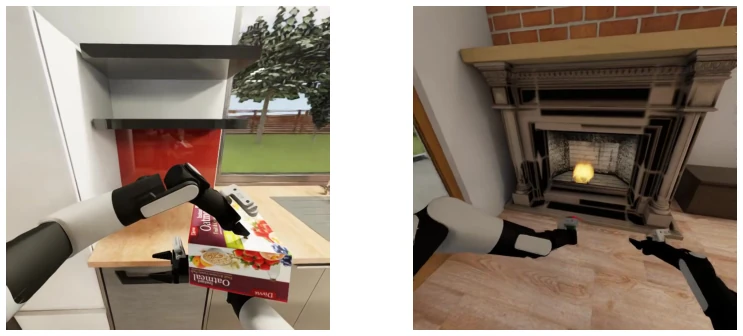

This paper proposes a 'structured intermediate state' for bimanual manipulation annotation, attempting to strike a balance between the flexibility of natural language and the rigor of templates. SSC introduces state transition representation, utilizes VL models to complete information, and even possesses a 'logic check' function, which is quite practical. However, it relies too heavily on gripper signals; encountering abnormal operations such as 'hugging a box' without gripper closure directly triggers errors, indicating insufficient robustness. Furthermore, while using 13 VL models for verification yielded decent performance with gpt55, the ensemble improvement was limited, given the computational cost involved. Overall, this is a commendable annotation cleaning tool, but one should not expect it to resolve all annotation challenges for long-horizon tasks, particularly complex interactions exceeding the assumed framework.
Long-horizon imitation learning relies on subtask labels to decompose demonstrations, which is critical for VLA generalization policies [1, 2]. Existing annotation schemes are polarized: natural language descriptions are readable but lack structure, making automatic verification difficult due to linguistic variability [3]; whereas rigid templates such as BEHAVIOR-1K's skill annotation [4], while structured, are overly granular, resulting in compromised readability and cross-task consistency. This annotation bottleneck restricts the capabilities of downstream consumers (e.g., hierarchical policies or VLA training). Therefore, a representation is required that enables both structured storage and automatic consistency verification to support downstream policy training and evaluation, while maintaining human readability.
The core is the Structured Subtask Chain (SSC), consisting of a chain of Structured Subtask Template (SST) entries. Each SST includes action components (subject-verb-object), condition modifiers, base motion, and a post-state scene graph. The pipeline is divided into three stages: 1. SST construction, parsing annotations and trajectories, and recording pending queries; 2. Three-level cascaded parsing, prioritizing trajectory inference (L1), followed by metadata lookup (L2), and finally VL query (L3); 3. Consistency check, based on four state transition invariants (grasp/release symmetry, object identity continuity, gripper event alignment, bimanual handoff validity). The scene graph defines seven configurations (e.g., E empty hand, S co-grasp), ensuring logical completeness of state transitions. In the online architecture, the resolved state from the previous step propagates to the next step, reducing subsequent queries.
Evaluated on BEHAVIOR-1K [4], covering 50 tasks, 3 demonstrations per task, totaling 2357 action units. Tested 13 VL models as L3 validators. gpt55 and gem35f achieved the highest accuracy (~86%). The consistency check identified 31 anomalies, including time misalignment and failure to release. It was found that some tasks exceeded framework assumptions (e.g., no gripper closure), which were correctly marked rather than masked. The results indicate that VL models can serve as effective validators, although extremely difficult tasks still require human intervention. On the VL trimmed-hard subset, the gap between top models was only 3pp, suggesting that single model selection is not critical.
其他图片Other Figures

Figure 4: Two illustrative out-of-scope cases surfaced by the consistency checker. Left (A1, task 0024): the robot hugs an oatmeal box between two open grippers without any close event, so no gripper signal places the acquire inside the annotated window and anomaly I3 fires. Right (A2, task 0030): at the end of the episode the lighter and the holder remain in the grippers, so the trajectory ends with a non-empty terminal state and anomaly I1 fires (a hold never matched by a release).